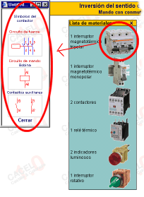

Ventana "Materiales"
| <<--Volver |
En la ventana materiales se representa un listado
con los nombre y fotos de los elementos característicos que se utilizan
para construir el circuito en una instalación real.
Si se hace clic en cualquiera de las fotos, emerge una pequeña ventana
con la representación simbólica de dichos elementos en los esquemas
de automatismos.

Todas estas ventanas son nuevas sesiones del navegador, por lo tanto permanecerán activas hasta que el usuario las cierre. Es aconsejable picar en "Cerrar", situado en la parte inferior central de dichas ventanas, una vez que los símbolos han sido analizados.
| <<--Volver |